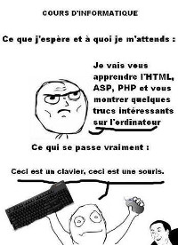

Son projet - Sa passion
Olivier est véritablement un fan du Japon. Et c'est cette passion pour ce pays qui a fait naître en lui le projet d'obtenir un visa vacances/travail, afin de rester un an au pays du soleil levant et pourquoi pas y faire carrière.
Son parcours
Olivier a surtout occupé des postes en rapport avec l'informatique :
- Il a été technicien informatique pour la Société 5/5.
- Animateur informatique pour un Lycée Agricole.
- Animateur informatique au sein de Pôle Emploi où il s'occupait des bornes informatique.

Wild Code School - Pourquoi, Comment
C'est suite à la journée portes ouvertes, du 28 juin 2014, qu'Olivier décide de postuler à l'école numérique : Wild Code School.
Il compte sur cette formation et tout ce qu'elle peut lui apporter, pour approfondir ses connaissances et s'ouvrir les portes vers un emploi qui le passionne.
Ses loisirs
Olivier aime les mangas, la musique dite "virtuelle", en particulier une chanteuse Vocaloïd : Hatsune Miku. Il aime également les jeux vidéos (trait souvent commun aux passionnés de l'informatique et du code).
Et pour le côté sportif, il apprécie le ping-pong, le tennis et tous les sports de raquettes.
Et lui alors??
Agé de 29 ans, il réside à Montireau en Eure-et-Loir et est Célibataire. Il est titulaire du Permis B et possède sa voiture.
Il a suivi des études en BEP Electrotechnique et a obtenu un Bac Pro Informatique.